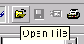
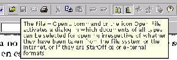

Next: Ayuda general
Up: StarDesktop: El Entorno de
Previous: Recuperación de errores
Índice General
Son el nombre en inglés de los pequeños globos amarillos con
información que aparecen cuando el puntero se deja un momento sobre
algún botón de una barra de símbolos. Para que aparezcan hay que
marcar en el menú [Ayuda] la opción Significación. Si se
desea que en el globo aparezca una información más detallada, habrá
que marcar también la opción Ayuda activa. En las figuras
5.18 y 5.19
se ve la diferencia de información que se obtiene en el primer caso y
en el segundo sobre un mismo botón. Cuando la ayuda activa esté
marcada, también aparecerán globos sobre las opciones de los menús.
Figura 5.18:
Tooltip normal
|

|
Figura 5.19:
Tooltip extendido
|

|
Proyecto Cursos - LuCAS - http://lucas.hispalinux.es/htmls/cursos.html